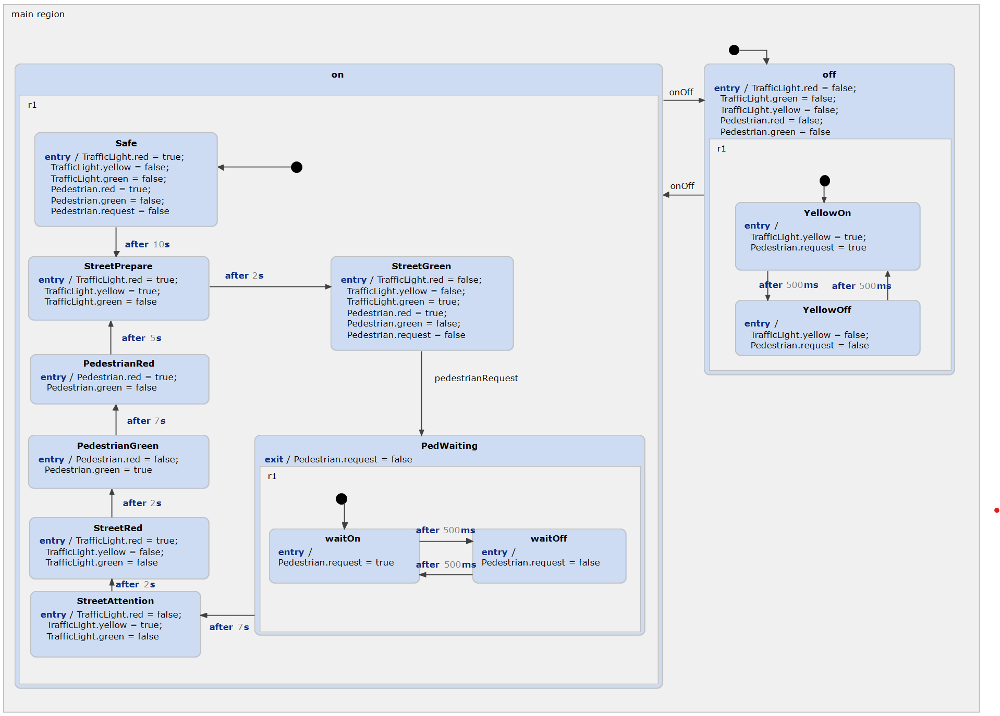
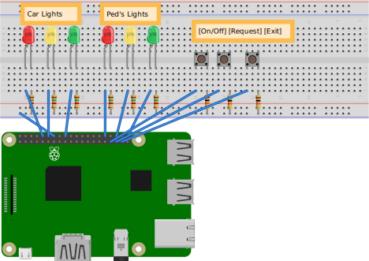

Demonstrates how to to generate Python source code from a statechart and use it on a Raspberry Pi (here: RP 3 Mod.B V1.2).

In summary, there are two traffic lights: one for the traffic on the street, and one for pedestrians who want to cross the street. They can push a button to request their traffic light to turn green, which activates a blinking wait-light first. The street's traffic light then goes through the standard procedure, turning on the yellow light, followed by the red light, allowing the pedestrians to cross safely. After some time, the pedestrians' traffic light turns red again, and the cars are allowed to pass until the next request is made by a pedestrian.
Additionally, the traffic light can be switched off completely. This turns the yellow lights into a blinking mode, signaling that the traffic light is indeed switched off and that the street should be crossed in a careful manner.
The traffic light example is based on Python and contains an API for the Raspberry Pi that demonstrate the state machine behaviour in /model/TrafficLightCtrl.sct. This example combines generated Python code with manual Python implementations (using an API). To generate the state machine code, right-click on /model/TrafficLightCtrl.sgen and select 'Generate Code Artifacts'.
To start the application you have two options. run src/traffic/light/TrafficlightDemo.java. For this, just right-click on the project and select 'Run As > Java Application'.
The implementation of the API is based on the following circuit (created with fritzing):

Please be aware of the following issues: